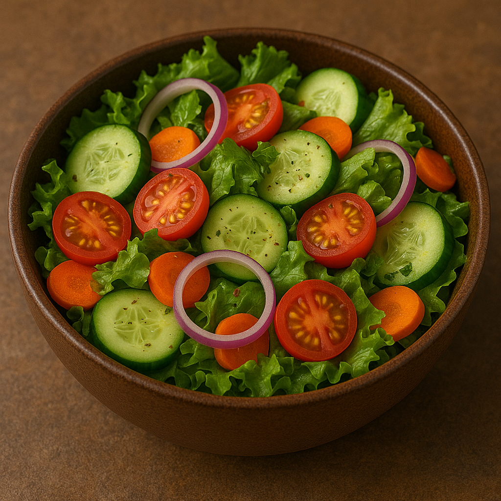

🥗 Fresh Garden Salad
Description
This vibrant garden salad is light, crisp, and packed with nutrients. Made with a colorful mix of fresh vegetables and tossed in a zesty homemade dressing, it's the perfect side or refreshing main dish. Whether you're enjoying it for lunch or as a starter, this salad brings a burst of flavor and crunch to every bite.
Ingredients
- 2 cups mixed greens (lettuce, spinach, arugula)
- 1 cucumber (sliced)
- 1 tomato or a handful of cherry tomatoes
- 1/2 red onion (thinly sliced)
- 1/2 bell pepper (any color, sliced)
- 1/4 cup shredded carrots
- 2 tbsp olive oil
- 1 tbsp lemon juice or vinegar
- Salt and pepper to taste
- Optional: feta cheese, croutons, olives
Steps
- Wash and dry all vegetables thoroughly.
- Chop or slice the vegetables as listed.
- Combine all veggies and greens in a large bowl.
- Whisk olive oil, lemon juice (or vinegar), salt, and pepper in a small bowl to make dressing.
- Pour dressing over the salad and toss gently to combine.
- Add feta, olives, or croutons if desired.
- Serve immediately for optimal freshness and flavor.